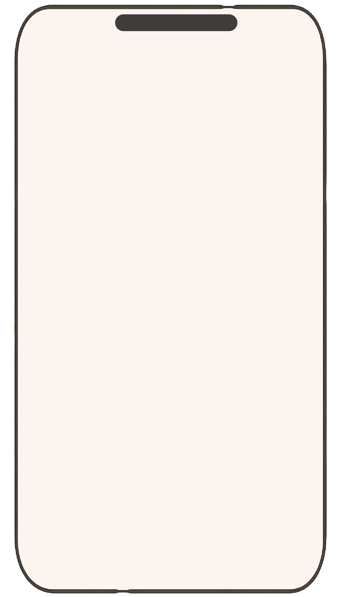
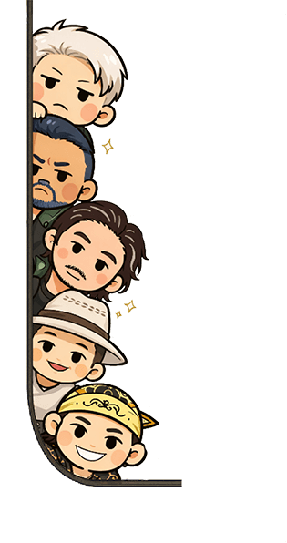
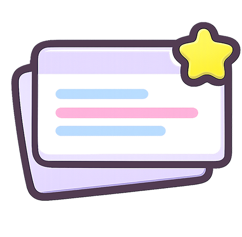
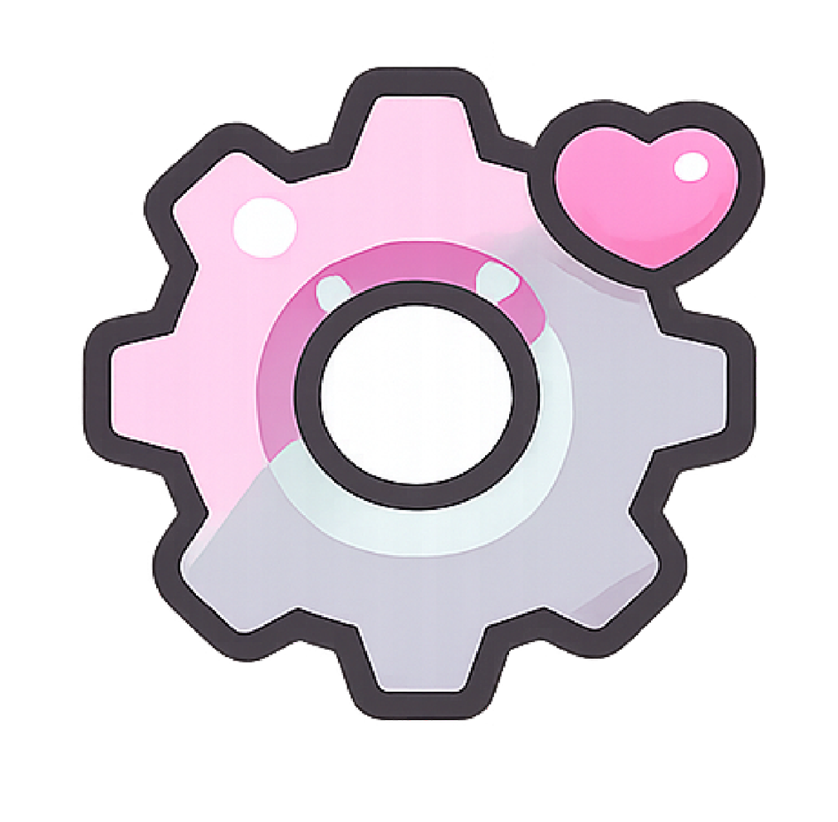
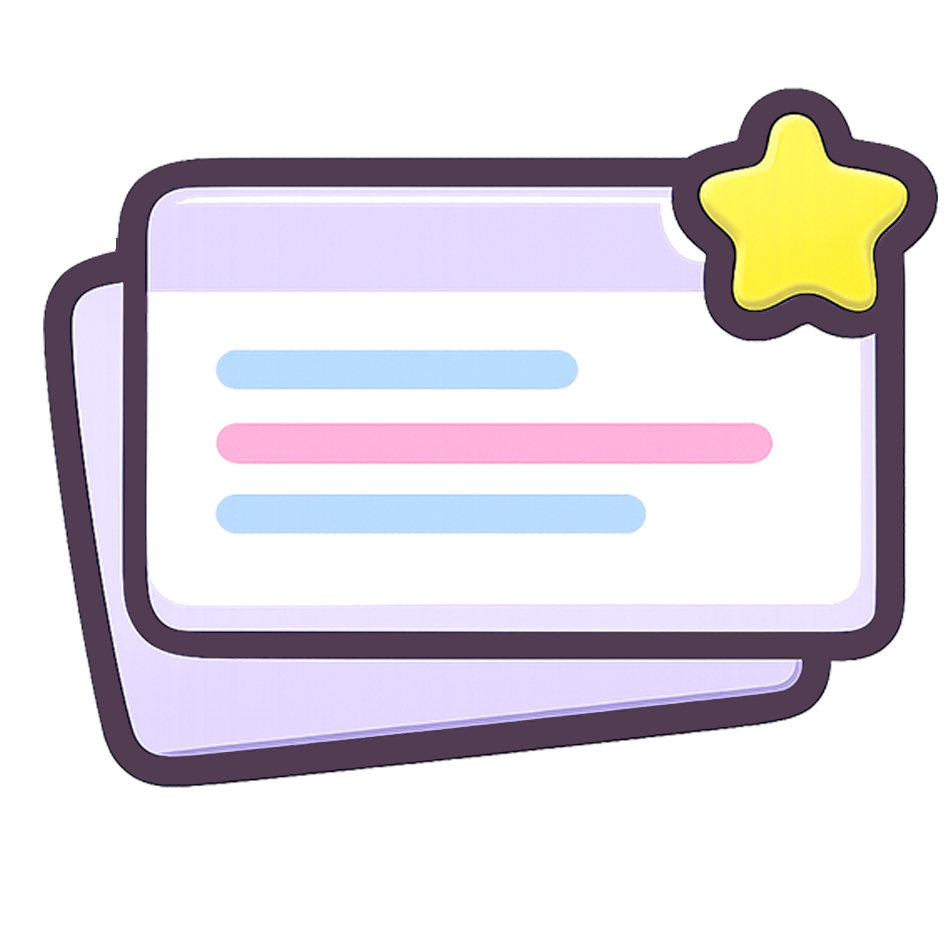

<div id="mini-phone-root">
  <!-- 手机壳背景 -->
  <div class="phone-shell">
    

    <!-- 左下角小人（主界面才显示） -->
    

    <!-- 左侧功能图标 -->
    <div class="phone-left-icons">
      
      
      
      
    </div>

    <!-- 底部图标 -->
    <div class="phone-bottom-icons">
      
      
    </div>

    <!-- 可编辑内容区域 -->
    <div class="phone-content" id="phone-content">
      <div class="page page-home active">主界面（占位）</div>
      <div class="page page-duanxin">短信页面</div>
      <div class="page page-luntan">论坛页面</div>
      <div class="page page-heike">黑客页面</div>
      <div class="page page-shezhi">设置页面</div>
      <div class="page page-qunliao">群聊页面</div>
    </div>
  </div>
</div>
